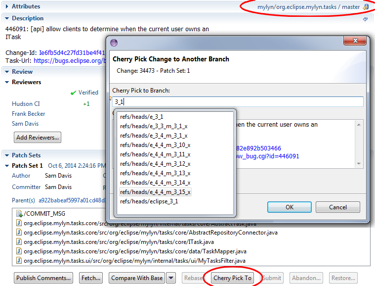
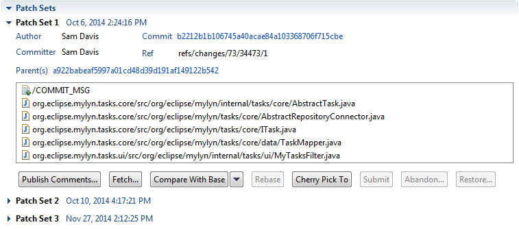
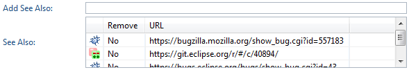

| Release | Resolved | Merged | Community Contributions |
| 3.15 April 10, 2015 |
41 bugs |
100 reviews |
Community contributions were
provided by Mat Booth, Nicholas Folk, Doug Janzen, and Stephan Wahlbrink. Includes: Mylyn 3.15, Mylyn Builds 1.7, Mylyn Commons 3.15, Mylyn Context 3.15, Mylyn Docs 2.4, Mylyn Reviews 2.6. Mylyn Tasks 3.15, Mylyn Versions 1.7. |
Also see the New & Noteworthy for: Mylyn 3.14, Mylyn 3.13, Mylyn 3.12, Mylyn 3.11, Mylyn 3.10, Mylyn 3.9, Mylyn 3.8, Mylyn 3.6, Mylyn 3.4, Mylyn 3.2, Mylyn 3.0, Mylyn 2.0, Mylyn 1.0-0.6, Mylyn 0.5, Mylyn 0.4, Mylyn 0.3
NOTE: Mylyn 3.15 requires Java 1.6 or later and supports Eclipse 3.8, 4.3 or 4.4. See the download page for repository locations.
|
Cherry-Pick Commits |
The Gerrit connector supports cherry-picking changes to another branch, and reviews display their branch in the header of the attributes section.  |
|
|
|
|
Parent Commits |
The patch set section has been redesigned to use a 2 column layout that shows the parent commit of each patch set. Hyperlinking allows the parent commit to be opened in the EGit commit editor.  |
|
|
|
|
Reuse compare editors |
The Gerrit connector reuses open compare editors instead of opening duplicate editors when opening a file from the patch sets section or the review navigator, and when comparing patch sets. |
|
See Also |
The Bugzilla connector now supports the See Also field.  |
|
|
|
|
Bugzilla 5.0rc2, 4.4.8, 4.2.13, and 4.0.17 |
Bugzilla 5.0rc2, 4.4.8, 4.2.13, and 4.0.17 are now supported. |
See porting guide for additional notes on API changes.
|
Tasks: Owner ID added to ITask |
To better support connectors which provide options for person fields, ITask now provides getOwnerId and setOwnerId methods, and ITaskMapping provides a getOwnerId method. See bug 446091 |